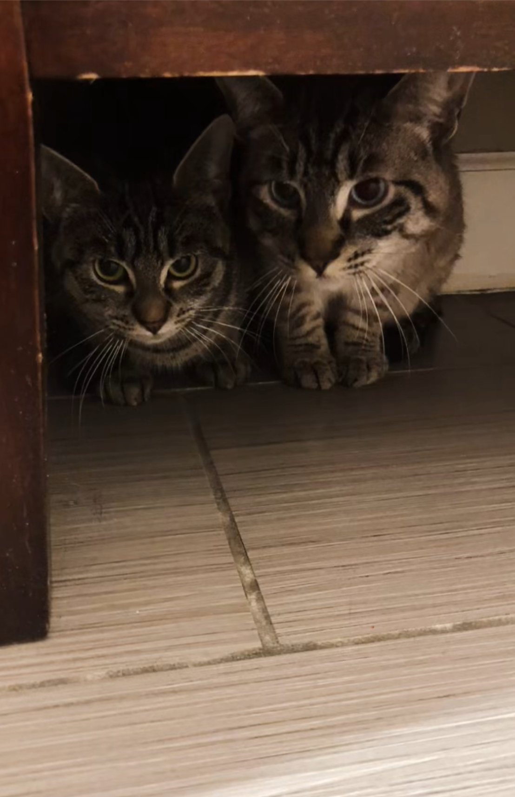
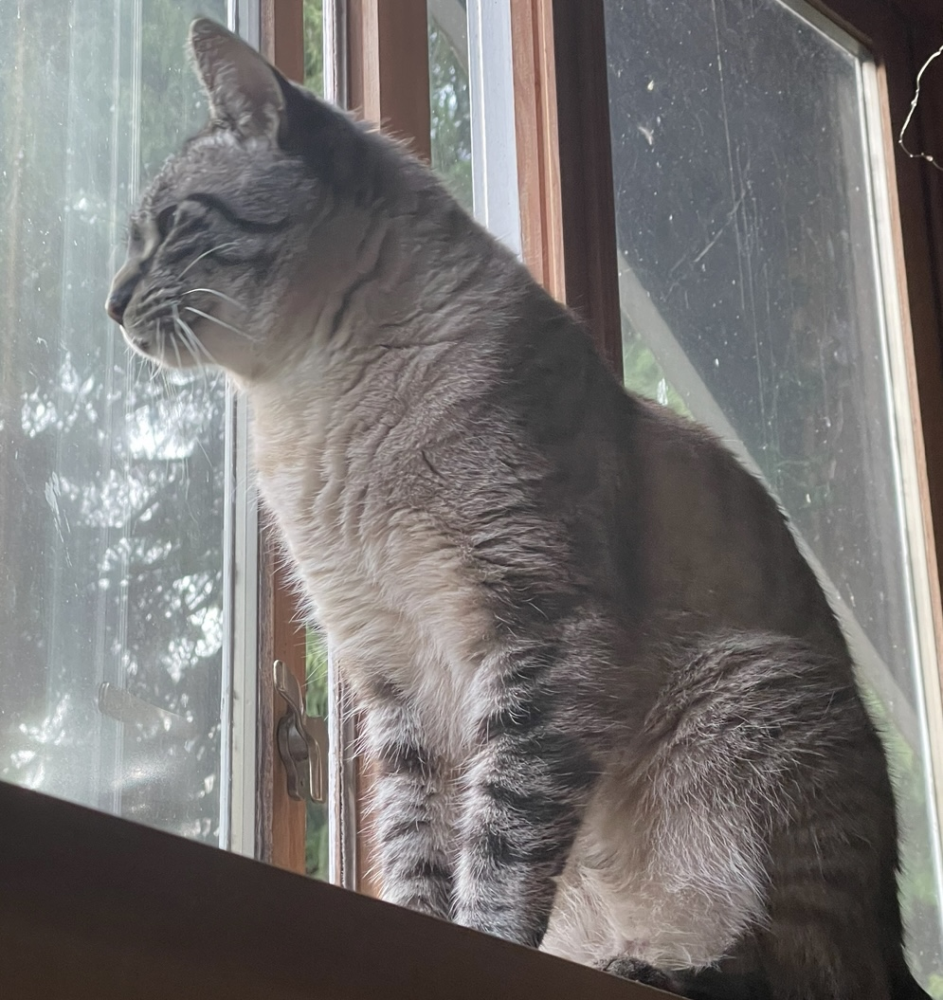
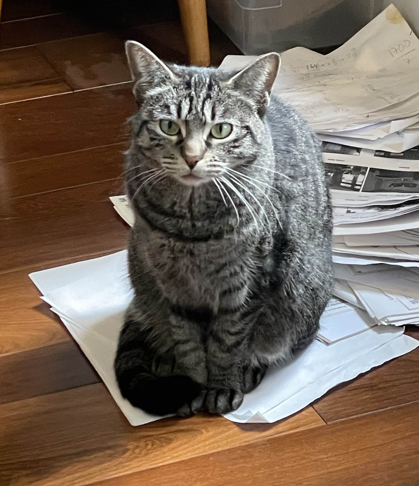
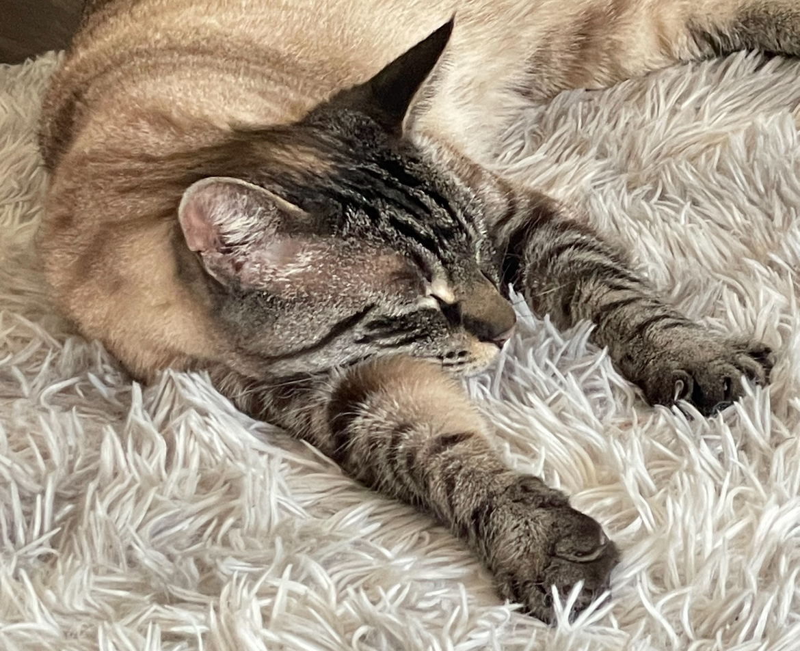
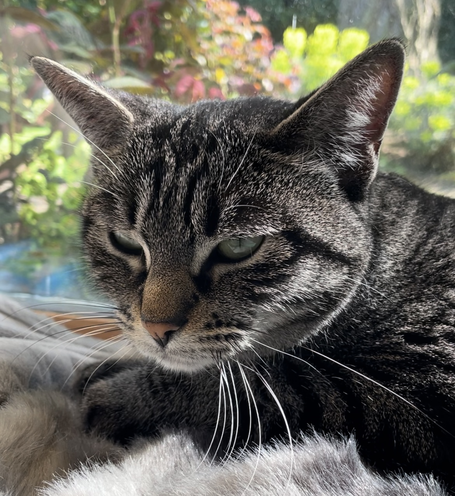
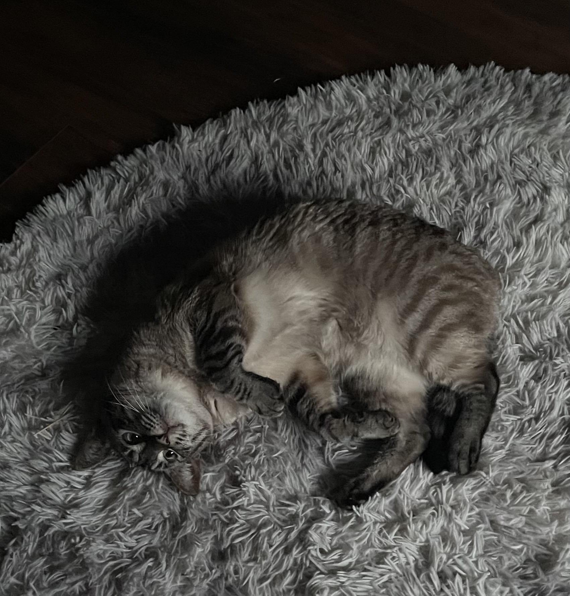
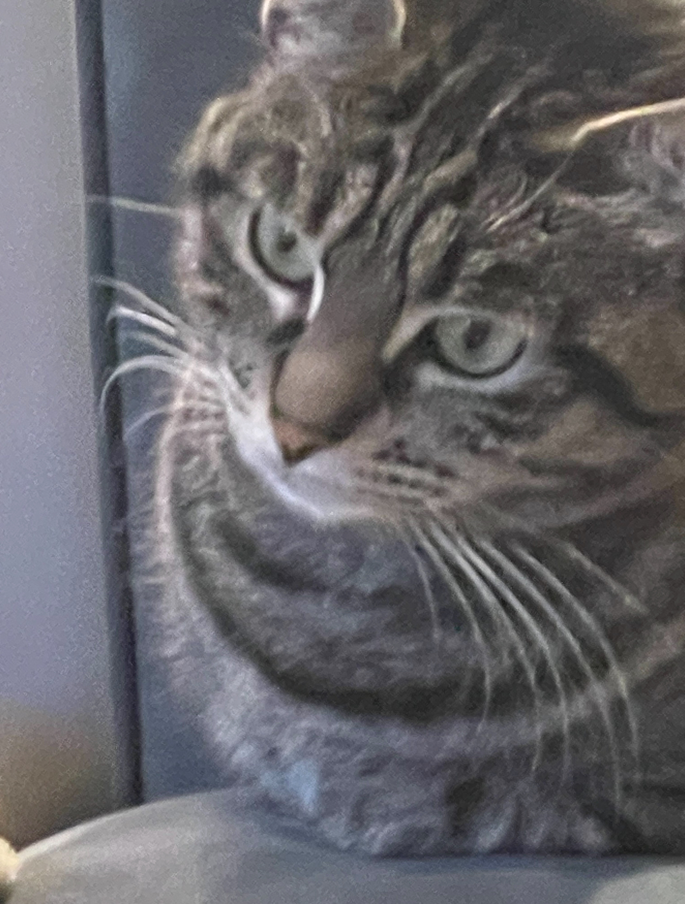
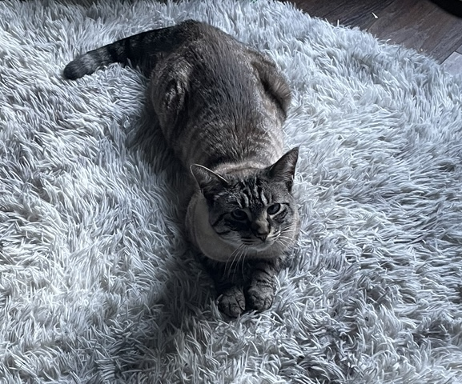

This is a collection of photos of my cats :D.
I have one Female cat and one Male cat, they're siblings and they are both 5 years old. Crunchy is the female one and Cream is the male one. Crunchy has a darker color palette and green eyes, she's very expressive. Cream has a light color palette,and blue eyes. Cream is less expressive than Crunchy. Crunchy likes to sleep alot and likes chin rubs. Crunchy perfers catnip toys. Unlike Crunchy, Cream perfers belly rubs and normal pets. Cream likes to play with random objects like pencils, bottle caps and magnets. Cream likes soft surfaces like carpet.